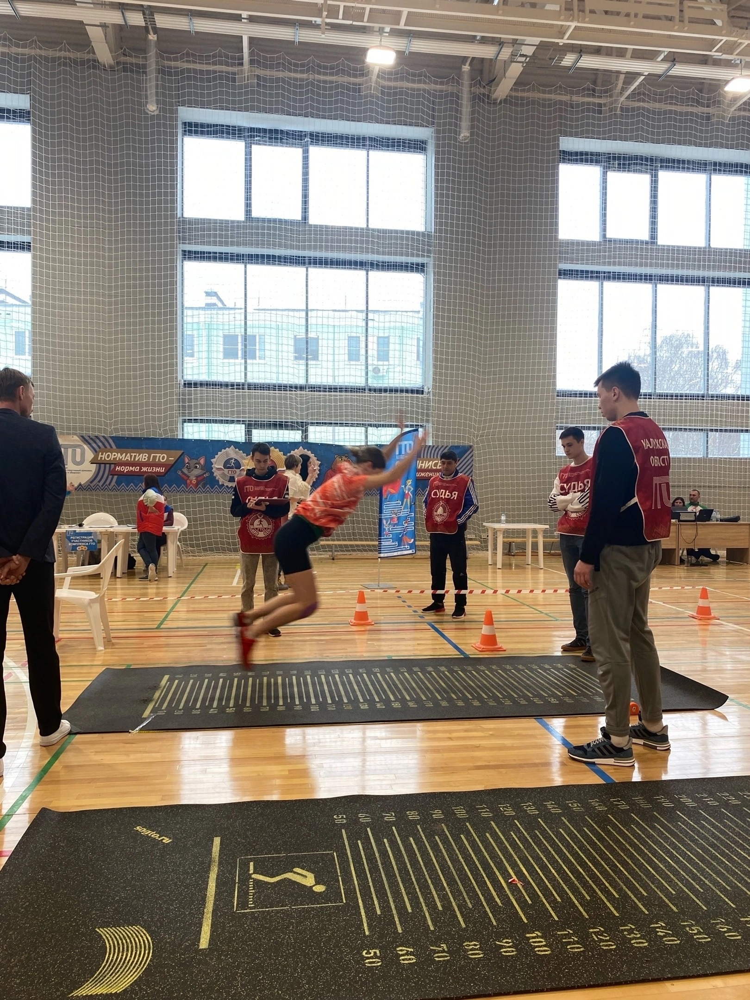
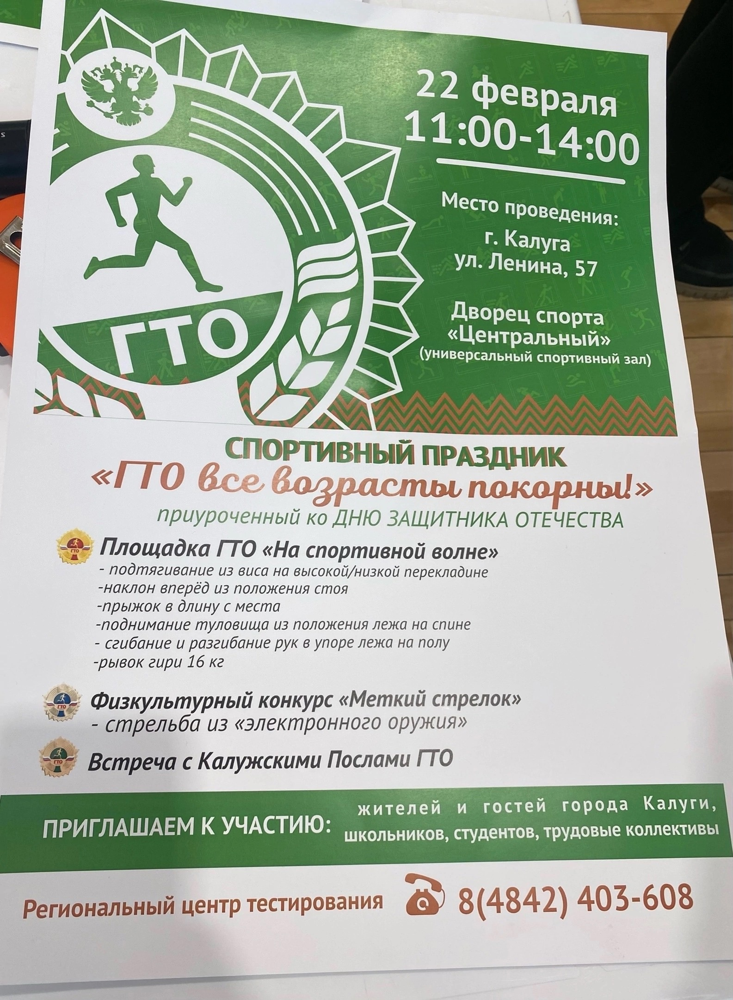
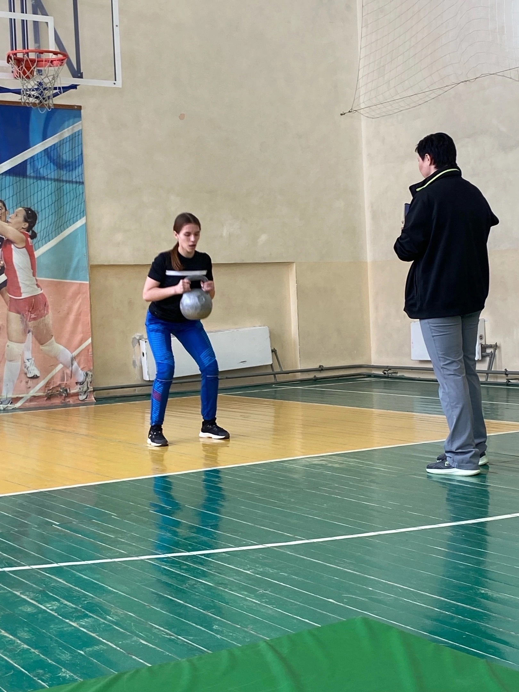
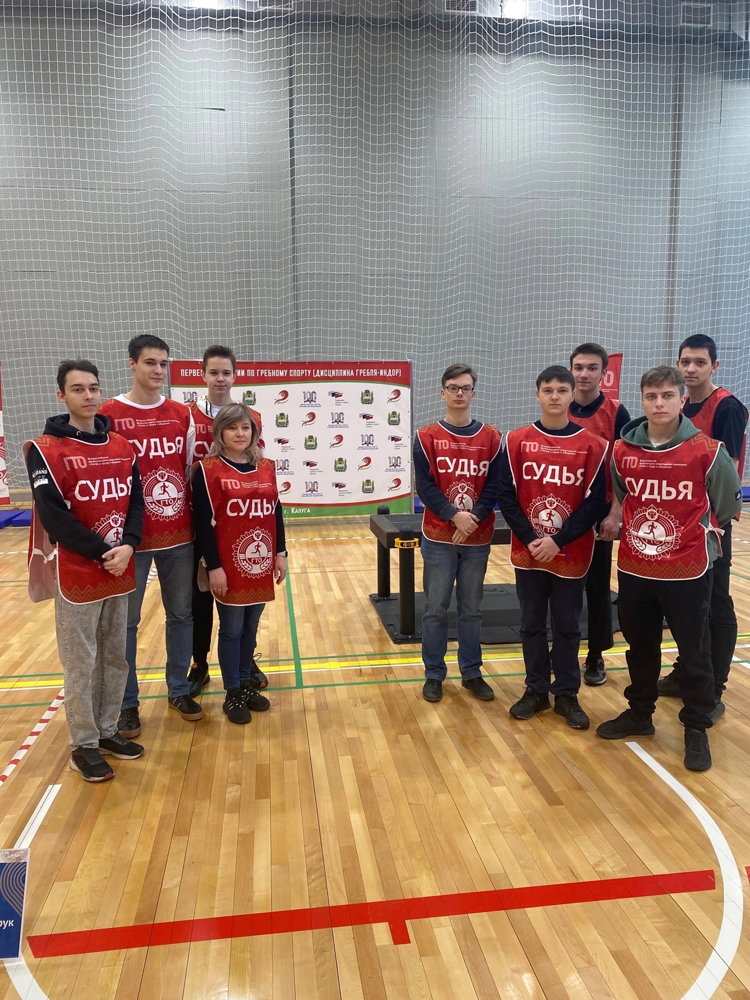
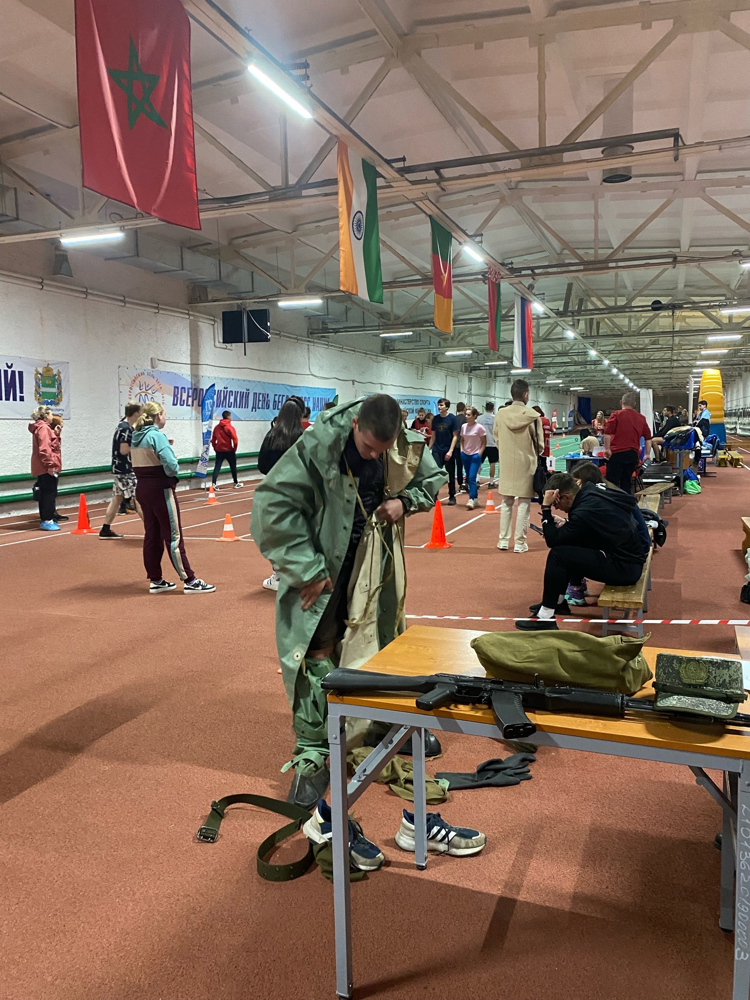
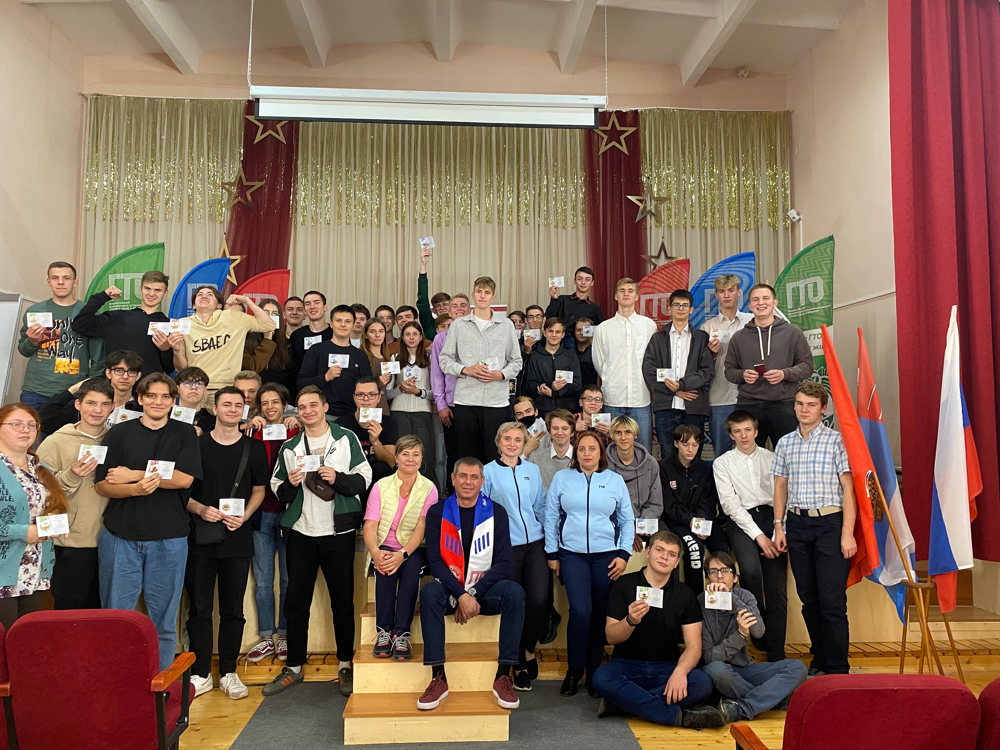

Медиа


 принимал нормы ГТО по стрельбе и плаванию у студентов 1 и 2 курсов ГБПОУ КО «КТЭП».jpg)
 ГТО «Стрельба из электронного оружия».jpg)


 принимал нормы ГТО по стрельбе и плаванию у студентов 1 и 2 курсов ГБПОУ КО «КТЭП».jpg)


 ГТО «Стрельба из электронного оружия».jpg)










